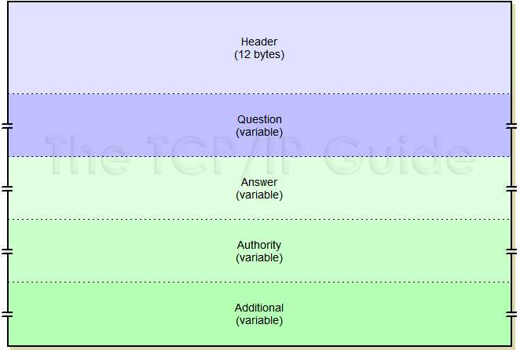
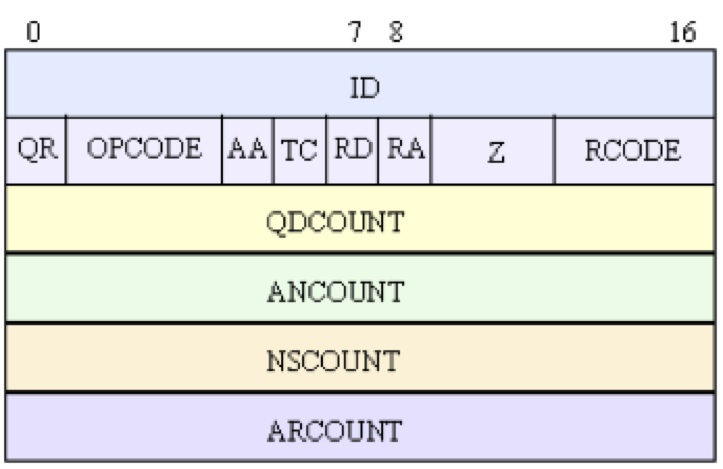
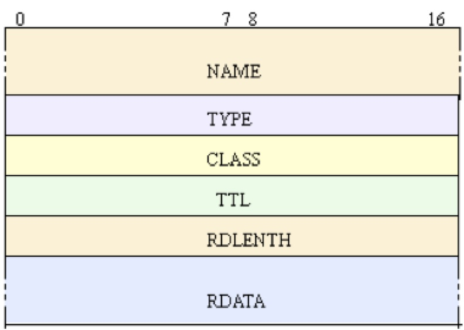
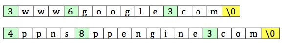
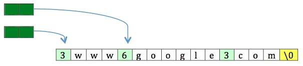
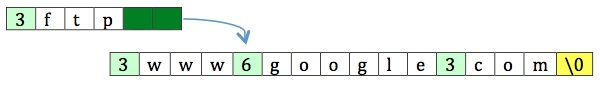
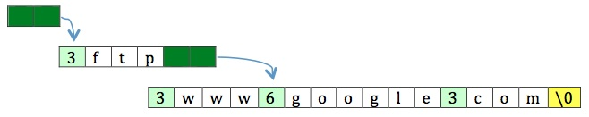

lim (artisan) = artist
There is no doubt, DNS (Domain Name System) is one of the most important infrastructure of the Internet. The most basic (but also most important) function of DNS is establishing associations between domain names and host addresses (IP addresses). DNS is one of the most widely used services on Internet. However, we rarely need to program directly on DNS protocol. TCP/IP stack (and other Internet protocol stacks) usually inherently works with domain name as well as IP address. The examples include function gethostbyname() in IPv4 stack and the counter-part of getaddrinfo() in IPv6 stack. Given a domain name, return associated IP addresses. We need not to know the details of DNS protocol. But... Yes, there are still cases that need programming directly on DNS protocol. This project built a simple software framework for DNS resolver with C++ language and object-oriented programming.
DNS servers store (or bind) a series of data associated with domain names. These data is so called Resource Records. There are many types of Resource Records, such as A, CNAME, MX, TXT, and so on. They are used for different aims.
DNS protocol defined the ways of Resource Records are set, stored, and retrieved. DNS messages are exchanged between client and server, as well as server and server. A request message is sent, and a response message is returned. The format of DNS message is shown as below:

Usually, a request message consists of Header section and Question section, while a response message may contain all sections if necessary.
The Header section in a request message and a response message have same format shown as blow.

It is a fix-length structure with 12 bytes long, which are assigned into fields as below.
A class of Header is defined to denote DNS message header. Please find codes with below links.
In a request message, a Question section is following Header section that is used to tell DNS server the target domain name and what kind of Resource Records are being requested. In a response message, a Question section is following Header section that is corresponding to the Question section in the request message. A Question section consists of a sequence of questions. Each question contains three fields of QNAME, QTYPE, and QCLASS. The number of questions is given by the QDCOUNT field in Header section. Below is the formats of Question section and a piece of inner question.

Each piece of question in Question section has a variable length. It is determined by the length of domain name in QNAME field. Here we define a wrapper class not for Question section but for a piece of question in Question section. Consequently, a Question section is a list of Question objects. I am sorry that the class name here is somewhat confused. Please find codes with below links.
DNS server returns Resource Records in a Answer section in response message, following Header section and Question section. A Answer section is placed into a response message only when it is needed. For example, there is no Answer section is needed if there is a error occurred or there is no target Resource Record for the requesting. A Answer section consists of a sequence of Resource Records. Each Resource Record contains the fields of NAME, TYPE, CLASS, TTL, RDLENTH and RDATA. The length of RDATA is given by RDLENTH. The content and format of RDATA depends on the TYPE of the Resource Record. Below is the formats of Answer section and a piece of inner Resource Record.

Like that in Question section, we define a wrapper class here for a piece of Resource Record in Answer Section, rather than the Answer section itself. Design patterns of Strategy and Factory is used here for a extendable architecture to denote different types of Resource Records. A base class ResourceRecord handle the common parts of Resource Records and derived classes will handle RDATA according to the actual type. A class RRFactory works as a object factory to instantiate ResourceRecord object with given type. If there is no a derived class of ResourceRecord is defined for a given type, base class is instantiated simply. The example codes have implemented the classes for parsing Resource Records with types of A, CNAME, TXT, and MX. With this design, it is rather easy to support new types of Resource Records. What we need to do is define a new derived class of ResourceRecord and add a entry in RRFactory. We need to parse RDATA field of the Resource Record in derived class.
Please find the scaffold codes with below links.
To this point, we know that there are some fields in DNS message contains domain name. For example, the QNAME field in each piece of question in Question section, and the NAME field in each piece of Resource Record in Answer section. In addition, the RDATA field in Resource Record may also contain domain names. In order to reduce the size of message, DNS protocols utilizes a compression scheme for domain names, which will eliminate the repetition of domain names in the fields of QNAME, NAME, and RDATA. It is worth to mention that name compression is not mandatary in DNS message. In general, when we construct a request message, we would not like to compress domain names for simpleness. But DNS server usually compress domain names when construct a response message, so that we still need to handle compressed domain names in response message.
With DNS domain name compression scheme, a domain name in a message can be represented with one of below three forms:
Two examples:

The number in the green box is the count of the following characters. Each character and the ending zero are one byte width. The count is also one byte width, but the high two bits are always set to ‘00’, hence the range of count is 0-63. Each section of "count + characters" corresponds to a dot-divided part of domain name. That means, the maximum length of dot-divided part in domain name is 63 in DNS message.
The pointer consists of two bytes, and the high two bits of the first byte are always set to ‘11’. The value of the pointer (exclude the high two bits) specifies an offset from the start of the packet (i.e., a zero offset specifies the first byte of the ID field).
The target position may be the start of another name string, or the middle of another name string.

In this situation, the first part of the name is given with the form 1 (i.e., a sequence of "count + characters"), while the last part is given with the form 2 (i.e., a pointer).

In addition, the pointer can be embedded. The decoding need to be implemented recursively.

Another rule is only one pointer is permitted in a name field, and the pointer must be the end of the field (followed by a '\0').
We define a class of Name to decompress a compressed domain name in DNS message. Compression of domain name is not implemented at this point. Please find codes with below links.
In above discussion, we have designed objects to parse the key fields of DNS message. Finally, we define a class of Message as a wrapper of a request message or a response message. When worked as a request message, Message contains a Header object (Header section) and a list of Question objects (Question section). When worked as a response message, Message contains a Header object (Header section), a list of Question objects (Question section), and possibly a list of ResourceRecord objects (Answer section). Further, a object of Resolver is implemented to wrap the procedure of sending and receiving DNS messages via UDP socket. Please find codes with below links.
A command line tool is implemented to work as a DNS resolver. It runs with a given argument of target domain name. It connects to a DNS server and retrieve all kinds of resource records for the domain name as is shown in below screen shot.

Download source code or pre-compiled binary
| Windows | Mac OS X | Linux | Source code | Git repository |
We can create readable, maintainable, scalable, testable, documented, and flexible code. Please contact us at team@limlabs.com for software development or consulting service.